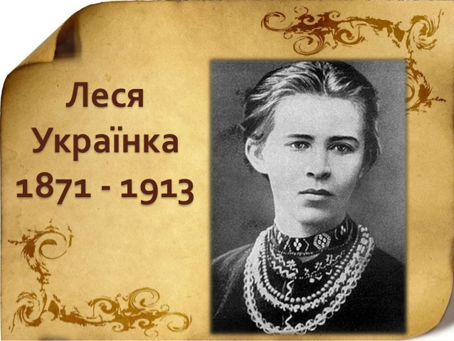

Леся Українка: Життя та творчість
Автор: Іваненко О. О.
У цій статті розглядається життєвий шлях Лесі Українки, її основні твори та вплив на українську
літературу.
Видатна українська поетеса, драматург і громадська діячка
Леся Українка (Лариса Петрівна Косач) народилася 25 лютого 1871 року в місті Новоград-Волинський.
Вона була однією з найзначніших постатей української літератури.
Її творчість охоплює поезію, драматургію та прозу.
Леся Українка була видатною українською поетесою, драматургом і громадською діячкою. Лариси Коваленко. Вона народилася 25 лютого 1871 року в місті Новоград-Волинський. Леся Українка була однією з найвпливовіших поетес України, її твори відзначені глибокими емоціями та любов'ю до рідної землі.Донька Прометея є однією з найзначніших постатей української літератури
Її творчість охоплює поезію, драматургію та прозу. Вона писала про важливі соціальні та політичні проблеми свого часу, а також про любов, природу та людські почуття.
Леся Українка померла 1 серпня 1913 року, залишивши після себе багатий спадок, який продовжує надихати нові покоління українців.Її найвідоміші твори: 'Надія', 'Хотіла б я піснею стати', 'Давня весна', 'Лісова пісня', "Мелодія", "Кассандра" та "Бояриня".
У цьому розділі ви знайдете наукові статті та дослідження, присвячені творчості та впливу Лесі Українки на українську культуру.
Автор: Іваненко О. О.
У цій статті розглядається життєвий шлях Лесі Українки, її основні твори та вплив на українську
літературу.
Автор: Петренко А. В.
Досліджується використання символізму у творчості Лесі Українки та його значення для розвитку
української поезії.
Автор: Сидоренко М. І.
У статті аналізується вплив Лесі Українки на сучасних українських письменників та літературні течії.
Автор: Коваленко Т. П.
Досліджується місце Лесі Українки в європейському літературному контексті та її взаємодія з іншими
культурами.